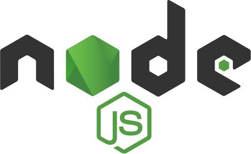
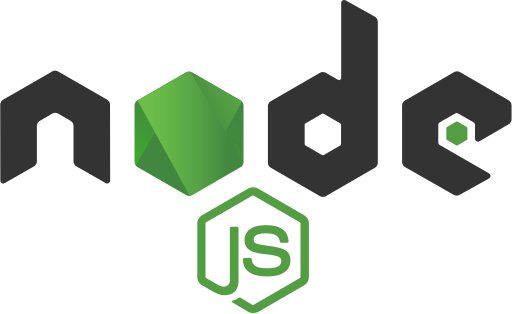

my story
Born in Istanbul, Turkey in 1999, I was a naturally curious kid with
a love for experiments and inventions. Tesla's biography left a
lasting impression on me, inspiring dreams of creating something
that would leave a mark on the world. I'd constantly tinker with
broken electronic devices at home, eager to understand and fix them.
This childhood curiosity sparked a passion that's guiding me toward
a future where I can make my own contributions to technological
advancements.
I completed middle school with the first place and entered the top
0.7 percentile in Turkey and secured a place at Beşiktaş Anatolian
High School, which was considered one of the top 10 high schools in
Turkey at that time. It played a major role in in shaping my
character, thanks to its quality education and social setting. My
interest in music deepened as I became part of the school's choir
and band. Performing for a large audience in the Vodafone Freezone
Music Competition Between High Schools was a thrilling and memorable
experience for me.
I studied Electrical and Electronic Engineering at Istanbul Kültür
University. While I was a student, I worked in lots of different
jobs. I also participated in the polyphonic choir and I've become a
board member of the ERASMUS Club.
University introduced me to programming for the first time, and I
instantly fell in love with it. In addition to working on simple
applications, I also was taught embedded circuit programming. For my
graduation project, I developed a system to detect COVID-19 from its
symptoms using MATLAB machine learning. Additionally, I designed and
simulated circuits for "buck" and "boost" converters, researched and
built a genuine flow meter system, and explored Holter monitoring
and related devices during my academic journey.
Upon graduating from university, I didn't have enough skills to be a
software developer. As a result, I began my journey as a Technical
Support agent at Jotform. I've actively participated in a multitude
of diverse projects and tasks, gaining enjoyable experiences that
improved my communication, teamwork, problem-solving, and time
management skills. Alongside my professional responsibilities, I
dedicated weekends and post-shift hours to continue improving my
programming abilities. This dual focus has allowed me to steadily
progress in both technical and interpersonal aspects.
Currently, I keep developing several projects on my own, aiming to
sharpen my skills and gain experience. I'm also actively learning
new technologies. Simultaneously, I'm looking for a job that will
allow me to apply my knowledge and skills in a professional setting.
 
